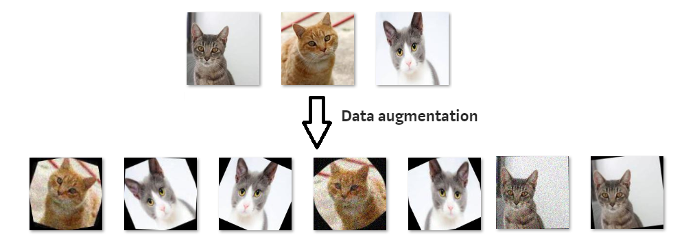
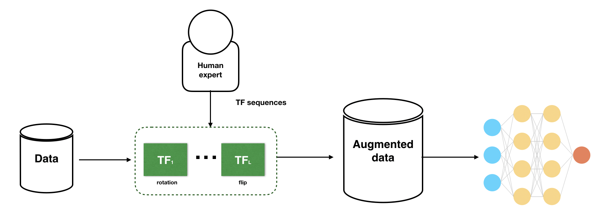

Clasificacion de imagenes
Clasificacion de imágenes (Bananas o manzanas) usando la camara web utilizando Tensorflow.js
Entrenamiento
Impotacion de librerias
import tensorflow as tf
from tensorflow.keras.preprocessing.image import ImageDataGenerator
import os
import numpy as np
import matplotlib.pyplot as plt

Importacion de datos
carp_entren_apple = os.path.join('/content/carpeta_entrenamiento/apple_1.1') # imagenes de manzanas para pruebas
carpeta_entren_banana = os.path.join('/content/carpeta_entrenamiento/banana_1.1') # imagenes de bananas para pruebas
carpeta_val_apple = os.path.join('/content/carpeta_validacion/apple_1.1') # imagenes de manzanas para validacion
carpeta_val_banana = os.path.join('/content/carpeta_validacion/banana_1.1') # imagenes de bananas para validacion
Aumento de datos
image_gen_entrenamiento = ImageDataGenerator(
rescale=1./255,
rotation_range=40,
width_shift_range=0.2,
height_shift_range=0.2,
shear_range=0.2,
zoom_range=0.2
horizontal_flip=True,
fill_mode='nearest')

Generacion
data_gen_entrenamiento = image_gen_entrenamiento.flow_from_directory(batch_size=TAMANO_LOTE,
directory=carpeta_entrenamiento,
shuffle=True,
target_size=(TAMANO_IMG,TAMANO_IMG),
class_mode='binary')
image_gen_val = ImageDataGenerator(rescale=1./255)
data_gen_validacion = image_gen_val.flow_from_directory(batch_size=TAMANO_LOTE,
directory=carpeta_validacion,
target_size=(TAMANO_IMG, TAMANO_IMG),
class_mode='binary')

Modelo
modelo = tf.keras.models.Sequential([
tf.keras.layers.Conv2D(32, (3,3), activation='relu', input_shape=(150,150,3)),
tf.keras.layers.MaxPooling2D(2, 2),
tf.keras.layers.Conv2D(64, (3,3), activation='relu'),
tf.keras.layers.MaxPooling2D(2,2),
tf.keras.layers.Conv2D(128, (3,3), activation='relu'),
tf.keras.layers.MaxPooling2D(2,2),
tf.keras.layers.Conv2D(128, (3,3), activation='relu'),
tf.keras.layers.MaxPooling2D(2,2),
tf.keras.layers.Dropout(0.5),
tf.keras.layers.Flatten(),
tf.keras.layers.Dense(512, activation='relu'),
tf.keras.layers.Dense(2) ])
Compilacion & Entrenamiento
modelo.compile(optimizer='adam',
loss=tf.keras.losses.SparseCategoricalCrossentropy(from_logits=True),
metrics=['accuracy'])
epocas=60
history = modelo.fit_generator(
data_gen_entrenamiento,
steps_per_epoch=int(np.ceil(total_entrenamiento / float(TAMANO_LOTE))),
epochs=epocas,
validation_data=data_gen_validacion,
validation_steps=int(np.ceil(total_val / float(TAMANO_LOTE))) )
Ejemplo de como hacer un servidor https
- Descarga Python en tu computadora (ya viene incluido en los archivos)
- Abre una línea de comandos o terminal
- Navega hasta la carpeta donde descargaste todos los archivos
- Ejecuta el comando python -m http.server 8000
- Abre un explorador y ve a http://localhost:8000